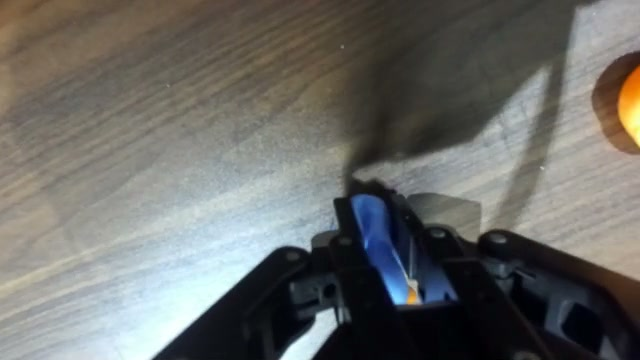
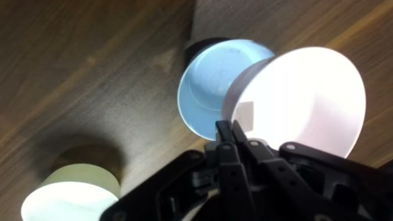
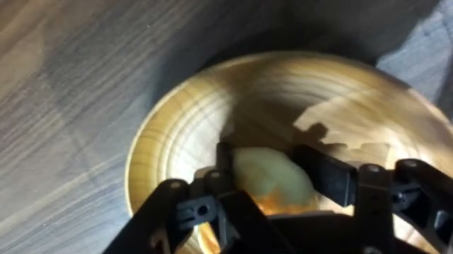

Learning from
verified imagination.
From self-generated rollouts
to improved robot execution.
Three steps. One evolving policy.



From self-generated rollouts
to improved robot execution.
Three steps. One evolving policy.


